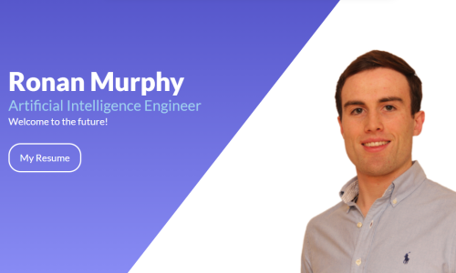

Project Work
AI
Computer Vision, NLP, Reinforcement Learning and ML
Data Analytics
Large-scale Data Analysis using Microservices and Pipelines
Other
Website, Mobile Applications and Optimisation projects
Q-Learning Algorithm
Implemented deterministic FrozenLake ‘grid world’ problem where Q-learning agent learned a defined policy to optimally navigate through the lake.
Irony & Sarcasm Detection

Recurrent Neural Network (with LSTM layer) models to perform classification of Ironic and Sarcastic Tweets using Natural Language Processing.
NYC Taxi Microservice Pipeline
Microservices pipeline which processed traffic and incident information providing Real-Time feedback to taxi drivers in NYC regarding optimal routes.
Twitter Stream Analysis
A pipeline of functions to analyse tweets using Apache Spark RDDs.
Football Heading App
Android application to connect to microprocessors via Bluetooth which retrieves data recorded and analyses it graphically.
Personal Profile Website
Created this website as a personal profile of work completed using HTML, CSS and Javascript.
Knapsack Problem

Multiobjective optimisation using black-nox approaches to solve the Knapsack problem.